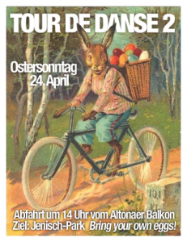

Für all jene, die sich Osterstau und Fernverkehrsstress ersparen wollen; denen Swingmusik und -tanz ohnehin längst zur Heimat wurden, findet am 24. April 2011 die TOUR DE DANSE No 2 statt.
Abfahrt ist um 14h vom Altonaer Balkon. Tanzgestimmtes Personal nebst Drahtesel und Osterschlemmereien sind willkommen! Bring your own eggs, dance your own legs üôÇ
Nachtrag: hier gibts ein paar Impressionen dieses schönen Tages.
Vielen Dank an Cristina für diese schöne Idee.